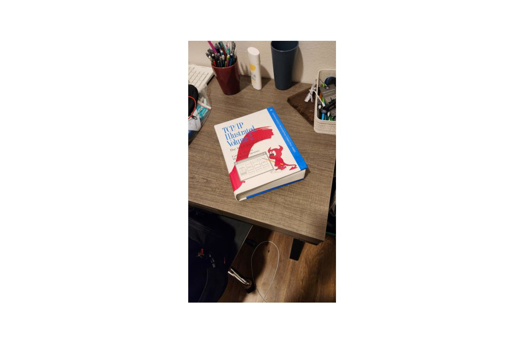
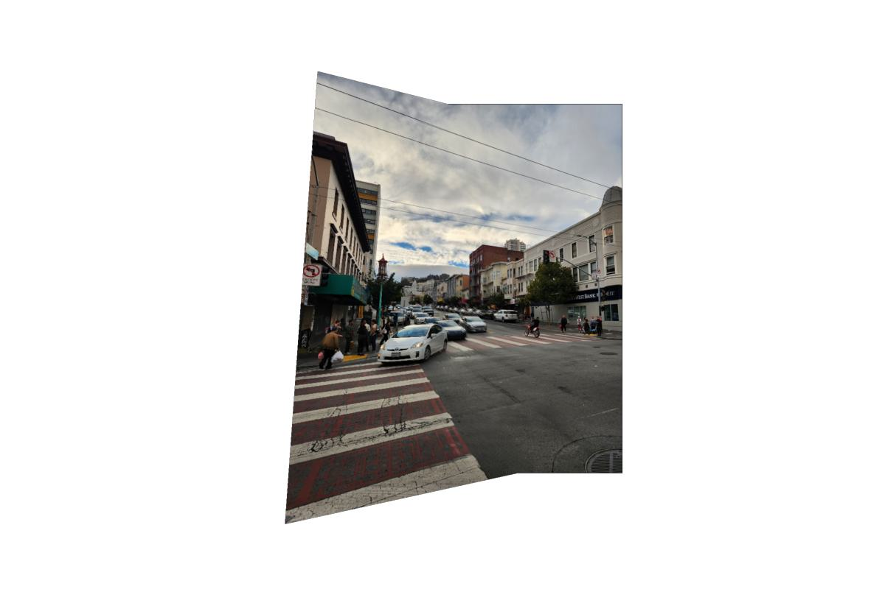

Image Warping and Mosaicing
By Alec Thompson
Overview
The goal of this project is to two or more photographs and create an image mosaic by registering, projective warping,
resampling, and compositing them.
Shoot the Pictures
I took photos from the same center of projection (COP), and rotated the camera to get overlapping images.
Then, I selected corresponding points across images.
| California Hall Images and Correspondences |
San Francisco Images and Correspondences |
Valley Life Sciences Building Images and Correspondences |
 |
 |
|
Recover Homographies
To align the images, we need to recover the projective transformation between them. This transformation
is represented by a 3x3 homography matrix with 8 degrees of freedom. Given corresponding points between
images, we can set up a system of equations:
$$
\begin{bmatrix}
a & b & c \\
d & e & f \\
g & h & 1
\end{bmatrix}
\begin{bmatrix}
x \\
y \\
1
\end{bmatrix} =
\begin{bmatrix}
wx' \\
wy' \\
w
\end{bmatrix}
$$
$$
\Rightarrow
\begin{cases}
ax + by + c = wx' \\
dx + ey + f = wy' \\
gx + hy + 1 = w
\end{cases}
$$
$$
\Rightarrow
\begin{cases}
ax + by + c = (gx + hy + 1)x' \\
dx + ey + f = (gx + hy + 1)y'
\end{cases}
$$
$$
\Rightarrow
\begin{cases}
ax + by + c - gxx' - hyx' = x' \\
dx + ey + f - gxy' - hyy' = y'
\end{cases}
$$
$$
\Rightarrow
\begin{bmatrix}
x & y & 1 & 0 & 0 & 0 & -xx' & -yx' \\
0 & 0 & 0 & x & y & 1 & -xy' & -yy'
\end{bmatrix}
\begin{bmatrix}
a \\
b \\
c \\
d \\
e \\
f \\
g \\
h
\end{bmatrix} =
\begin{bmatrix}
x' \\
y'
\end{bmatrix}
$$
For each pair of points, just stack them onto the matrix and the constant vector.
If we have more than 4 pairs of points, this system is overdetermined.
We can get an approximate solution using least squares.
Warping Images
Using the computed homography matrix, we can warp images to align with each other.
To find the warped image boundaries, I created a bounding box by transforming the original image corners using by homography matrix.
Sometimes, the warped corners would be negative, so I shifted the warped image so all pixels are positive.
Then, I implemented inverse warping using nearest neighbor interpolation to avoid aliasing artifacts.
I also used an alpha mask to make all regions without valid pixel values to the warped image transparent.
Image Rectification
I used my warped image function to rectify a picture of my book, TCP/IP Illustrated Volume 2.
| Original TCP/IP Book |
Rectified TCP/IP Book |
|  |
 |
| Original Chess Board |
Rectified Chess Board |
|
|
Blend the images into a mosaic
I aligned the images on top of each other based on the point correspondences.
Having one picture overwrite the other would lead to strong edge artifacts, so I used a weighted averaging approach for sections that overlap.
I computed a Euclidean distance transform of each image. The distance transform determines each pixel's distance from the edges of the image.
For all sections that overlap, I set the pixel values to a weighted average of the two images, using the distance transform as the weights.
My blend function leaves one image unwarped and warps the other image into its projection. For each blend, I tried both possible configurations.
| California Hall Mosaics |
San Francisco Mosaics |
Valley Life Science Building Mosaics |
|
|
|
 |
 |
|
Feature Matching for Autostitching
Overview
The goal of this section is to automatically select the points to warp each image.
We reimplement the research paper “Multi-Image Matching using Multi-Scale Oriented Patches” by Brown et al.
Detecting corner features in an image
We used the Harris Interest Point Detector to find the corners of an image.
A corner is the junction of two edges in an image.
They are important features used for restoring image information.
| Harris corners are shown in blue |
Harris matrix |
 |
|
Implementing Adaptive Non-Maximal Suppression (ANMS)
Looking at the Harris corners, we notice that many of them are packed close together, creating lots of redundancy.
To remove some of these redundant points, we will use ANMS.
The ANMS algorithm is simple:
For every point, we find the distance to a neighboring point with a stronger corner response.
We will call this their 'radii'. We order all the points by their radii.
Then, we select the first 500 points from our ordered list.
The points towards the back of the list have weak corner responses
compared to their neighbors, and are therefore suppressed. The points at the front of the list have strong corner responses
and no close stronger neighbors.
| Harris and ANMS points. Harris points are shown in blue, and ANMS points are shown in purple. |
|
Extracting a Feature Descriptor for each feature point
For each point, we extract a feature descriptor to be used for feature matching.
We select a 40x40 pixel square around the point.
Then, we blur the image using a Gaussian filter, and downsize it to be a 8x8 pixels.
The feature descriptor is then normalized by setting the mean to zero and the standard deviation to one.
| Sample Feature Descriptors |
|
Feature Matching
We compute the ANMS points for each image we want to stitch together, and their associated feature descriptors.
For each feature descriptor in image one, we find its two nearest neighbors in image two.
We will validate matches based on Lowe's ratio.
If the distance to the first nearest neighbor divided by the distance to the second nearest neighbor is below
a certain threshold, we are reasonably confident that this is the correct match. If the ratio is above the
threshold, we assume that both the first nearest neighbor and the second nearest neighbor are incorrect matches,
and the feature descriptor has no match.
| Matches using Lowe's ratio |
|
Removing outliers using Random sample consensus (RANSAC)
Our feature matching system contains some incorrect matches. Unfortunately, the L2 norm is not robust against these outliers,
and the resulting homography can be skewed significantly from these incorrect matches. To combat this, we will use RANSAC.
RANSAC randomly samples four points from the first image, computes the homography on just these four points,
and determines how many warped points correctly line up with their corresponding point in the other image.
We will call these points the inliers. We repeat this process for a set number of iterations, and keep track
of the largest group of inliers.
We will compute the final homography matrix on these inliers, and then blend the images together automatically.
| All point correspondences in red/yellow and RANSAC point correspondences in blue/green |
|
Results (Manual vs Automatic)
Below are the results of manually selecting correspondences, versus automatically selecting them using the algorithm described above.
| Manual Mosaic of California Hall |
Automatic Mosaic of California Hall |
|
|
|
|
| Manual Mosaic of San Francisco |
Automatic Mosaic of San Francisco |
|
|
|
|
| Manual Mosaic of Valley Life Sciences Building |
Automatic Mosaic of Valley Life Sciences Building |
|
|
|
|